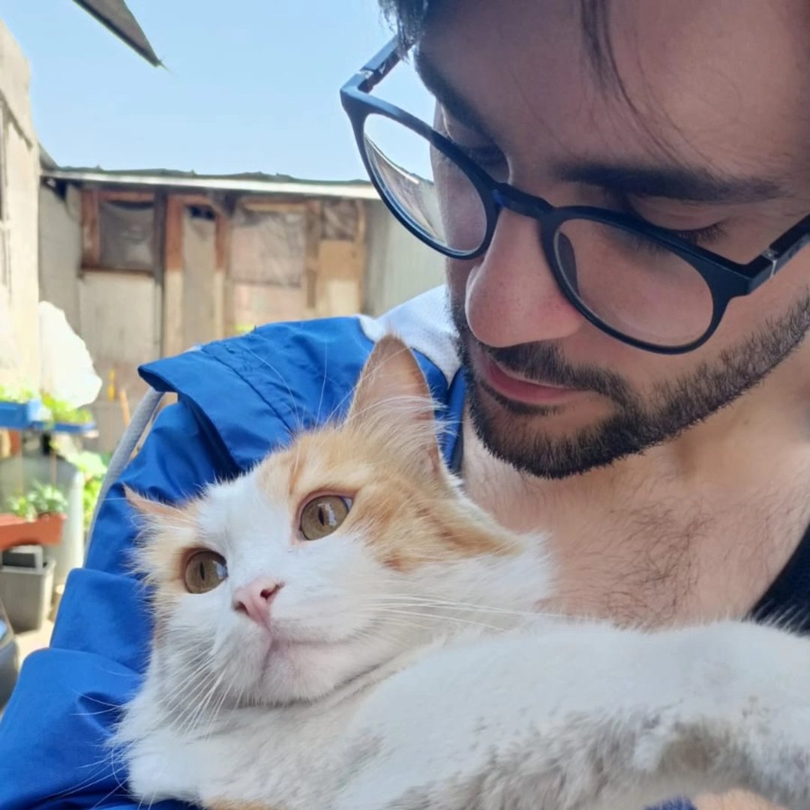

Chi sono io? Bella domanda
Ciao, sono Vollono Cristian, se sei capitato qui è perché hai trovato questa "cartella" o qualsiasi cosa tu voglia definirla (siamo nel 2026 non facciamo discriminazioni)
Sono un semplice studente di Informatica, al momento di questa stesura sono al secondo anno e sto imparando (per il momento) a usare HTML e CSS. Se vuoi conoscermi nel dettaglio clicca su Biografia, o se volessi mai contattarmi troverai i miei contatti nella voce apposita sopra citata. Successivamente troverai dei lavori a cui ho partecipato (e che sono anche andati a buon fine wow!). Per il resto a te la scelta, viaggiatore del web.
A cosa ho lavorato?
- Progetto di Car Sharing (Esame di PSD): Link github
- Progetto di un database per B&B (Esame di BD): Link github
- Progetto(Homework) del mio Sito Personale: Link github (In continuo aggiornamento)
- Progetto di TSW: PROSSIMAMENTE
Lavori esterni all'informatica (e università):
- Cameriere presso: "La capannina di Ugo Malafronte" (Gragnano, attualmente chiusa)", "Bar Essential" (Lettere)", "Malaingrano" (Gragnano, lavoro attuale)"
- Barista presso: "Seven Up" (Torre Annunziata)